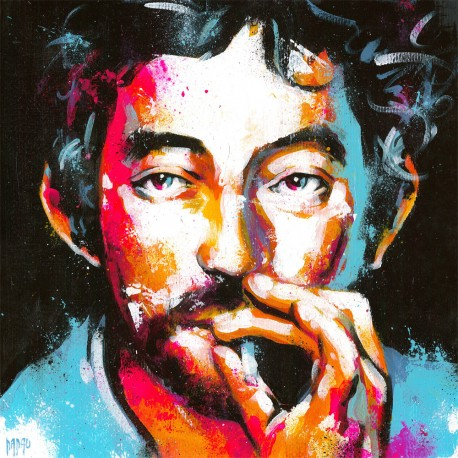
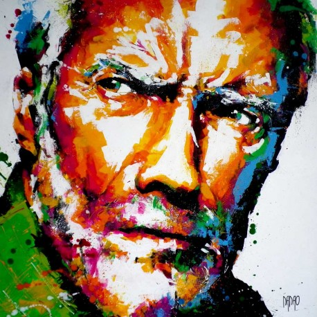
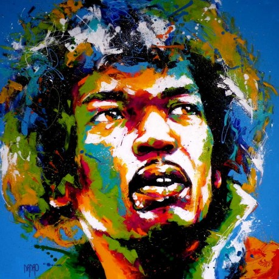

Choisis une oeuvre à reproduire en cliquant sur la miniature. (Nous te recommandons de te déplacer dans le musée pour bien voir l'oeuvre)

Nom de l'oeuvre n°1

Nom de l'oeuvre n°2

Nom de l'oeuvre n°3
MENU PRINCIPAL
Quelques indications importantes ou intéressantes sur l'explication des points (par exemple) / sur la progression des gains
Un systeme d'indice avec des PO / barre de progression des récompenses du joueur